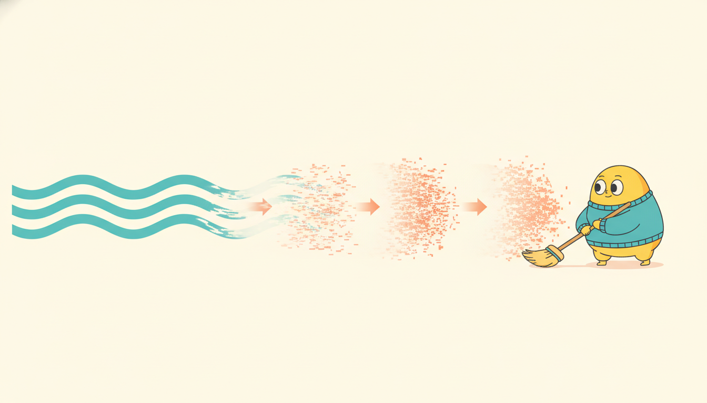

"They handed me pure static and asked for tomorrow's demand curve. So I take it one small step at a time: subtract a little of the chaos, look again, subtract a little more. A thousand patient subtractions later the noise has quietly become a forecast, and nobody believes I started from nothing."
A Denoising Step Patiently Turning Noise Into a Forecast
A diffusion model learns to generate by learning to denoise. It defines a fixed forward process that takes a clean signal and, over many small steps, drowns it in Gaussian noise until nothing structured remains; then it trains a neural network to run the reverse process, removing a little noise at each step, so that starting from pure noise and denoising repeatedly produces a fresh sample from the data distribution. For time series this is exactly the generative engine we want: condition the reverse process on the observed history and it draws probabilistic forecasts (TimeGrad); condition it on the observed entries and it draws plausible fills for the missing ones (CSDI); leave the conditioning out and it synthesizes whole series. The training objective is startlingly simple, the network predicts the noise that was added, and the whole apparatus is the exponential-smoothing-and-state-space lineage of denoising from Section 8.4 grown all the way up: there denoising recovered a clean level from a noisy observation in one shot, here a learned denoiser is iterated hundreds of times to manufacture signal out of nothing. This section derives the forward and reverse processes and the noise-prediction loss in full, surveys TimeGrad, CSDI, and SSSD, explains why diffusion has displaced GANs for temporal generation (stable training, mode coverage, calibrated uncertainty) and what it costs (slow sampling), then builds a complete DDPM for a 1D series from scratch and shows the same task in a few library lines. You leave able to write, condition, and reason about a temporal diffusion model.
In Section 17.3 we generated temporal data with variational autoencoders and generative adversarial networks, and we ended on the GAN's characteristic frustrations: unstable adversarial training, mode collapse that quietly drops whole regimes of behavior, and samples that look sharp but whose distribution is hard to trust. Diffusion models answer all three at once, and they do it with an idea that should feel familiar from deep in Part II rather than exotic. We have met denoising before. The exponential smoother of Chapter 5 and the residual-and-decomposition view of Section 8.4 both separated a clean signal from additive noise; the Kalman filter of Chapter 7 is a denoiser that optimally trades model against measurement. Diffusion takes that one move, "given something noisy, recover something cleaner", and makes it the only move, applied not once but as an iterated chain, and not to recover a known signal but to generate a new one. We use the unified notation of Appendix A throughout: $\mathbf{x}^{(0)}$ the clean series, $\mathbf{x}^{(n)}$ its noised version at diffusion step $n$, $\boldsymbol{\epsilon}$ the injected noise, $\boldsymbol{\epsilon}_\theta$ the learned denoiser.
Why give diffusion its own section in a chapter that already covered VAEs and GANs? Because for probabilistic time-series generation, forecasting, imputation, and synthetic data, diffusion is now the default, and the reason is not fashion but fit. A forecast is a distribution over futures, not a point, and diffusion produces calibrated distributions almost for free by sampling. Missing-value imputation is a conditional generation problem, and diffusion conditions naturally by fixing the observed entries and denoising only the gaps. And the training is a plain regression loss with none of the adversarial instability that makes GAN-based forecasters so temperamental. The cost, slow iterative sampling, is real and we will measure it, but for the uncertainty-critical settings of Chapter 19 the trade is usually worth it.
The four competencies this section installs: to state the forward noising process and the reverse denoising process and write the DDPM noise-prediction objective; to explain how TimeGrad, CSDI, and SSSD adapt that objective to forecasting and imputation by conditioning on history and observed entries; to argue why diffusion beats GANs for temporal generation and where its sampling cost bites; and to implement a tiny DDPM for a 1D series end to end, schedule, denoiser, training, ancestral sampling, and conditional imputation, then recover the same behavior from a library in a few lines. These skills carry directly into the probabilistic forecasting of Chapter 19 and resurface, remarkably, as diffusion planners in reinforcement learning in Chapter 28.
1. The Diffusion Idea: Forward Noising, Reverse Denoising Intermediate

A diffusion model is built from two processes that run in opposite directions along a chain of $N$ latent variables. The forward process is fixed, hand-designed, and requires no learning: it takes a clean data point $\mathbf{x}^{(0)}$ and corrupts it in $N$ small steps, each adding a little Gaussian noise, until $\mathbf{x}^{(N)}$ is indistinguishable from a draw of standard Gaussian noise. The reverse process is learned: a neural network that, given a noised $\mathbf{x}^{(n)}$ and the step index $n$, predicts how to remove one increment of noise, so that iterating it from pure noise walks back up the chain to a clean sample. Generation is running the reverse process; training is teaching the network to invert one forward step.
Concretely, the forward process adds Gaussian noise according to a fixed variance schedule $\beta_1, \dots, \beta_N$ (small positive numbers increasing from near zero toward one). Each step is
$$q(\mathbf{x}^{(n)} \mid \mathbf{x}^{(n-1)}) = \mathcal{N}\!\big(\mathbf{x}^{(n)}; \sqrt{1 - \beta_n}\,\mathbf{x}^{(n-1)},\; \beta_n \mathbf{I}\big),$$so each step shrinks the previous signal by $\sqrt{1-\beta_n}$ and injects variance $\beta_n$. The defining convenience of this Gaussian chain is that it has a closed form for jumping straight to step $n$ in one shot. Writing $\alpha_n = 1 - \beta_n$ and the cumulative product $\bar{\alpha}_n = \prod_{i=1}^{n} \alpha_i$, the marginal is
$$q(\mathbf{x}^{(n)} \mid \mathbf{x}^{(0)}) = \mathcal{N}\!\big(\mathbf{x}^{(n)}; \sqrt{\bar{\alpha}_n}\,\mathbf{x}^{(0)},\; (1 - \bar{\alpha}_n)\mathbf{I}\big), \qquad \mathbf{x}^{(n)} = \sqrt{\bar{\alpha}_n}\,\mathbf{x}^{(0)} + \sqrt{1 - \bar{\alpha}_n}\,\boldsymbol{\epsilon},\;\; \boldsymbol{\epsilon} \sim \mathcal{N}(\mathbf{0}, \mathbf{I}).$$In words: to get a training example at any noise level, scale the clean series down and add scaled noise, no step-by-step simulation needed, which is the single trick that makes diffusion cheap to train. This one equation is the engine of the whole method: it lets us noise any clean series to any level in a single line, without simulating the chain, which is exactly what makes training cheap. As $\bar{\alpha}_n \to 0$ the signal term vanishes and $\mathbf{x}^{(N)}$ becomes pure noise, the fixed starting point for generation. Figure 17.4.1 draws the two directions.
The reverse process is a learned Markov chain $p_\theta(\mathbf{x}^{(n-1)} \mid \mathbf{x}^{(n)}) = \mathcal{N}(\mathbf{x}^{(n-1)}; \boldsymbol{\mu}_\theta(\mathbf{x}^{(n)}, n), \sigma_n^2 \mathbf{I})$. The remarkable simplification of Ho and colleagues' DDPM (2020) is that we need not predict the mean directly. Reparameterizing, the optimal mean is a fixed function of the clean signal, and since $\mathbf{x}^{(n)} = \sqrt{\bar\alpha_n}\mathbf{x}^{(0)} + \sqrt{1-\bar\alpha_n}\boldsymbol\epsilon$, predicting the clean signal is equivalent to predicting the noise $\boldsymbol\epsilon$ that produced $\mathbf{x}^{(n)}$. So the network $\boldsymbol{\epsilon}_\theta(\mathbf{x}^{(n)}, n)$ is trained to output the noise, and the training objective collapses to a plain weighted mean-squared error between the true and predicted noise:
$$\mathcal{L}_{\text{DDPM}} = \mathbb{E}_{\mathbf{x}^{(0)},\,n,\,\boldsymbol{\epsilon}} \Big[\big\lVert \boldsymbol{\epsilon} - \boldsymbol{\epsilon}_\theta\big(\sqrt{\bar{\alpha}_n}\,\mathbf{x}^{(0)} + \sqrt{1 - \bar{\alpha}_n}\,\boldsymbol{\epsilon},\; n\big)\big\rVert^2\Big],\qquad \boldsymbol{\epsilon} \sim \mathcal{N}(\mathbf{0}, \mathbf{I}),\;\; n \sim \mathrm{Unif}\{1, \dots, N\}.$$Read the loss as a recipe: draw a clean series, draw a random step $n$ and noise $\boldsymbol\epsilon$, noise the series in one shot, and ask the network to name the noise it sees. That is the entire training loop, a regression problem, with no adversary and no reconstruction-versus-KL balancing act. Once $\boldsymbol\epsilon_\theta$ is trained, sampling runs the reverse chain: start at $\mathbf{x}^{(N)} \sim \mathcal{N}(\mathbf{0},\mathbf{I})$ and for $n = N, \dots, 1$ apply the ancestral-sampling update
$$\mathbf{x}^{(n-1)} = \frac{1}{\sqrt{\alpha_n}}\Big(\mathbf{x}^{(n)} - \frac{\beta_n}{\sqrt{1 - \bar{\alpha}_n}}\,\boldsymbol{\epsilon}_\theta(\mathbf{x}^{(n)}, n)\Big) + \sigma_n \mathbf{z},\qquad \mathbf{z} \sim \mathcal{N}(\mathbf{0}, \mathbf{I})\ (\mathbf{z}=\mathbf{0}\text{ at } n=1).$$Take a scalar series value $x^{(0)} = 2.0$ and a linear schedule with $\beta_1 = 0.02$, so $\alpha_1 = 0.98$ and $\bar\alpha_1 = 0.98$. Draw one noise sample $\epsilon = 1.3$. The one-shot marginal gives the noised value at step 1 directly: $x^{(1)} = \sqrt{\bar\alpha_1}\,x^{(0)} + \sqrt{1-\bar\alpha_1}\,\epsilon = \sqrt{0.98}\cdot 2.0 + \sqrt{0.02}\cdot 1.3 = 0.9899\cdot 2.0 + 0.1414\cdot 1.3 = 1.9799 + 0.1838 = 2.164$. The signal is barely touched at step 1: it has been scaled by $0.99$ and nudged by a small noise term. Now jump to a deep step where $\bar\alpha_n = 0.05$: $x^{(n)} = \sqrt{0.05}\cdot 2.0 + \sqrt{0.95}\cdot 1.3 = 0.2236\cdot 2.0 + 0.9747\cdot 1.3 = 0.447 + 1.267 = 1.714$, now dominated by noise, the signal almost gone. The schedule's whole job is this smooth handoff: early steps are nearly clean (easy targets), late steps are nearly pure noise (the generation start point), and the network learns to denoise across the entire range.
The temporal thread of this book is that every classical idea returns in learned form, and diffusion is the most literal instance of it. In Section 8.4 denoising was a one-shot operation: given a noisy observation, recover the clean level by subtracting an estimate of the noise, whether by exponential smoothing, a moving average, or a Kalman update. Diffusion keeps the exact verb, "estimate the noise and subtract it", and changes two things. First, it iterates: instead of one subtraction it chains hundreds, each removing a sliver. Second, it inverts the purpose: classical denoising recovers a signal that exists behind the noise, while diffusion runs the denoiser on pure noise that hides no signal, so the iterated subtractions manufacture a signal where there was none. The noise-prediction network $\boldsymbol\epsilon_\theta$ is, line for line, a learned multi-step generalization of the residual estimator of Section 8.4. Denoising became diffusion the moment we asked a denoiser to run on nothing and trusted it to hallucinate something plausible.
The asymmetry at the heart of diffusion is that the destructive direction is given and the constructive direction is learned. Adding noise needs no model, it is a fixed Gaussian schedule with a closed-form one-shot jump, so we can manufacture training pairs (clean, noised-at-level-$n$) for free, in unlimited quantity, at any noise level. All the network ever learns is the single, well-posed regression "what noise is in this input?", and because every training target is just the Gaussian sample we drew, the loss is exact and stable. The hard generative problem, "produce a sample from the data distribution", is decomposed into a long sequence of easy denoising problems, each a small step that the network can master. That decomposition, hard generation into many easy denoisings, is the whole reason diffusion trains where GANs struggle.
2. Diffusion for Time Series: TimeGrad, CSDI, SSSD Advanced
The DDPM of subsection one generates unconditionally: from noise to a sample, with no knobs. Time-series problems are almost always conditional: we want the future given the past, or the missing entries given the observed ones. The temporal diffusion literature is largely the story of how to feed the right conditioning information into the denoiser $\boldsymbol\epsilon_\theta$, so the reverse process draws from $p(\,\cdot \mid \text{condition})$ rather than the unconditional prior. Three landmark models stake out the design space.
TimeGrad (Rasul and colleagues, 2021) is autoregressive diffusion for multivariate probabilistic forecasting. It walks forward through the forecast horizon one time step at a time, exactly like the RNN decoders of Chapter 10, but at each horizon position it does not emit a point or a parametric density: it runs a full DDPM reverse chain to sample the multivariate vector for that step. The conditioning is a recurrent hidden state $\mathbf{h}_t$ summarizing the history and covariates up to $t$, and the denoiser becomes $\boldsymbol\epsilon_\theta(\mathbf{x}^{(n)}_t, n, \mathbf{h}_t)$. Because each step is sampled from a learned conditional distribution, rolling the autoregression forward many times yields a set of full sample paths, and the spread across paths is the forecast's uncertainty, calibrated and joint across the multivariate dimensions, which a per-dimension parametric head cannot capture.
CSDI, conditional score-based diffusion for imputation (Tashiro and colleagues, 2021), takes the non-autoregressive route. It treats the whole window as one object, splits the entries into observed and missing via a mask, and conditions the denoiser on the observed entries to denoise only the missing ones. The denoiser is a two-dimensional attention network (over time and over series) so it can borrow strength across both axes, the channel correlations and the temporal correlations, when filling a gap. CSDI's framing is general: forecasting is just imputation where the "missing" entries are the future, so the same trained model imputes interior gaps and extrapolates the horizon, all as conditional generation, which is why it became a workhorse for the irregular clinical series of Chapter 13.
SSSD (Alcaraz and Strodthoff, 2023) swaps the denoiser's backbone for a structured state-space layer (the S4 model of Chapter 13) instead of attention or convolution. The motivation is the long-range one: imputing or forecasting over very long horizons needs a denoiser whose receptive field spans the whole series cheaply, and the state-space layer's near-linear-time long-context modeling is a better fit than quadratic attention for thousands of steps. SSSD is the clean illustration that the diffusion framework is agnostic to the denoiser architecture: plug in whatever sequence model best matches your horizon, RNN (TimeGrad), attention (CSDI), or state space (SSSD), and keep the same forward process and noise-prediction loss.
| Model | Denoiser backbone | Conditioning | Primary task | Sampling structure |
|---|---|---|---|---|
| TimeGrad | RNN hidden state + denoiser net | recurrent summary $\mathbf{h}_t$ of history | multivariate probabilistic forecasting | autoregressive: one DDPM chain per horizon step |
| CSDI | 2D attention (time and series) | observed entries via a mask | imputation (and forecasting as imputation) | non-autoregressive: one chain over the whole window |
| SSSD | structured state-space (S4) | observed entries via a mask | long-horizon imputation and forecasting | non-autoregressive, long-context |
The common pattern across all three is worth naming explicitly, because it is what you reuse when you build your own. Conditioning a diffusion model is just enlarging the denoiser's input: $\boldsymbol\epsilon_\theta(\mathbf{x}^{(n)}, n)$ becomes $\boldsymbol\epsilon_\theta(\mathbf{x}^{(n)}, n, \mathbf{c})$ where $\mathbf{c}$ is the history, the covariates, the mask plus observed values, or all of these. The forward process and the loss are untouched; only the network's signature grows. For imputation there is a second mechanism, often combined with conditioning: at every reverse step, overwrite the observed positions of $\mathbf{x}^{(n)}$ with a correctly-noised version of their true values, so the denoiser is forced to make the missing entries consistent with the known ones. We use exactly this overwrite trick in the worked example.
CSDI's quiet punchline is that it refuses to distinguish forecasting from imputation at all. To a CSDI model the future is just a block of missing values that happens to sit at the right edge of the window, and a gap in the middle is a forecast that happens to be surrounded on both sides. The same network, the same mask machinery, the same denoising chain handles "what was the patient's heart rate during the hour the sensor fell off?" and "what will it be tomorrow?" as the identical question with the missing block in a different place. There is something pleasingly deflationary about it: we spent six chapters of Part II building bespoke forecasting machinery, and a diffusion model shrugs and says forecasting was always just imputation wearing a hat.
3. Why Diffusion Beats GANs Here, and What It Costs Intermediate
Section 17.3 left the GAN as the standard temporal generator and itemized its troubles. Diffusion addresses each one directly, and the contrast explains why the field moved. Training stability: a GAN is a minimax game between a generator and a discriminator whose equilibrium is delicate, prone to oscillation and divergence; diffusion has no adversary, just the supervised regression loss of subsection one, so training is as stable as fitting a regressor, with a loss that decreases monotonically and means what it says. Mode coverage: a GAN generator can win by collapsing onto a few modes the discriminator cannot distinguish, silently dropping whole regimes (a forecaster that never samples a crash); diffusion's likelihood-based objective penalizes missing mass everywhere, so it covers the full distribution and reproduces rare regimes that a collapsed GAN would erase. Calibrated uncertainty: a GAN's implicit density gives no honest handle on uncertainty, whereas diffusion is a sampler from an approximation to the true conditional, so drawing many forecast paths yields prediction intervals that are empirically well calibrated, which is the property Chapter 19 insists on.
These advantages rest on a deeper foundation: diffusion is a form of score matching. The noise-prediction network $\boldsymbol\epsilon_\theta$ is, up to a known scaling, an estimate of the score $\nabla_{\mathbf{x}} \log q(\mathbf{x}^{(n)})$, the gradient of the log-density of the noised data, with the relation $\nabla_{\mathbf{x}^{(n)}} \log q(\mathbf{x}^{(n)} \mid \mathbf{x}^{(0)}) = -\boldsymbol\epsilon / \sqrt{1 - \bar\alpha_n}$. Sampling by denoising is then Langevin-style ascent of the data log-density, climbing toward high-probability regions. This is why diffusion inherits the desirable statistical behavior of likelihood-based models, mode coverage and calibration, while sidestepping the intractable normalizing constant that makes direct likelihood training of a flexible density hard: it learns the score, which needs no normalizer. The score view also unifies DDPM with the score-based generative models of Song and colleagues, which CSDI's name (conditional score-based diffusion) directly invokes.
The cost is sampling speed, and it is not small. Where a GAN generates a sample in one forward pass, diffusion runs the reverse chain for $N$ steps, each a full network evaluation, so naive DDPM sampling is hundreds of times slower than a GAN. For TimeGrad this compounds with the autoregression: $N$ denoising steps at every one of the horizon's time steps. This is the diffusion practitioner's central operational concern, and the active mitigation, which we flag below, is faster samplers (DDIM and friends) that take far fewer reverse steps with little quality loss. The honest summary: diffusion buys stability, coverage, and calibration with sampling compute, and that trade is favorable precisely when you care about the distribution of futures rather than the cheapest single sample.
The one comparison to carry forward: a GAN gives you a fast, sharp, but distributionally untrustworthy sample (one pass, possible mode collapse, no calibration); a diffusion model gives you a slow but distributionally honest one (hundreds of passes, full mode coverage, calibrated intervals). For point-estimate generation where speed dominates and a single plausible sample suffices, the GAN's speed can win. For probabilistic forecasting, imputation with uncertainty, and any setting where the spread of the samples is the deliverable, diffusion's honesty wins, and the sampling cost is a tax you pay once at inference, falling fast as accelerated samplers mature. The score-matching foundation is why the honesty comes for free: learning the score gives you the right distribution without the intractable normalizer that blocks direct likelihood training.
The frontier moves on two axes, speed and scope. On speed, fast deterministic samplers (DDIM, DPM-Solver, and consistency models) cut the reverse chain from hundreds of steps to tens or even one, directly attacking the cost of subsection three, and 2024 to 2025 work brings them to temporal models so a TimeGrad-style forecaster can sample paths at near-GAN speed. On scope, latent diffusion for time series (running the diffusion in a learned compressed latent rather than the raw signal, following the image-domain Stable Diffusion recipe) makes long multivariate series tractable, and conditional architectures such as TimeDiff and TSDiff push diffusion to strong results on standard forecasting benchmarks against the deep architectures of Chapter 14 and the foundation models of Chapter 15. The most striking 2024 to 2026 development is conceptual reuse: diffusion as a planner, where models like Diffuser and Decision Diffuser generate whole state-action trajectories by denoising, turning the generative machinery of this section into a control method we reach in Chapter 28. Diffusion is no longer just a sampler; it is becoming a general way to generate structured temporal objects, forecasts, imputations, and plans alike.
4. Uses: Forecasting, Imputation, Synthesis, and a Bridge to Planning Beginner
The conditional diffusion machinery of subsection two powers three families of application, plus one forward-looking surprise. Probabilistic forecasting is the headline use: condition on history and covariates, sample many full future paths, and read uncertainty from their spread. Because the samples are joint across time and across series, they capture correlated futures (a heatwave that simultaneously lifts demand and price) that marginal per-step intervals miss, and these calibrated path samples are exactly the raw material the conformal and probabilistic methods of Chapter 19 consume and sharpen. Imputation is the CSDI use: fill missing entries in irregular or corrupted series by conditioning on the observed ones, with the per-gap uncertainty that simple interpolation cannot express, which matters acutely for the irregularly-sampled clinical data threaded through Part III. Synthetic data is the unconditional use: generate realistic series for augmentation, simulation, privacy-preserving sharing, or stress-testing, and Section 17.5 takes up how to evaluate whether such synthetic series are faithful, the question diffusion's strong sample quality makes both answerable and urgent.
The forward-looking surprise is that this same generative engine becomes a decision-making tool. In reinforcement learning and control, a trajectory of states and actions is itself a temporal sequence, so a diffusion model trained to generate trajectories can be conditioned on a desired outcome (high return, a goal state) to generate a plan: the denoised trajectory is a sequence of actions to execute. This is the diffusion planner, and it is the same DDPM forward process and noise-prediction loss of subsection one, applied to trajectories instead of forecasts. We develop it fully in Chapter 28, where sequence models, including diffusion, recast planning as conditional generation. For now, note the arc: the denoiser you are about to build for a 1D series is, structurally, the same object that will later plan a robot's motion.
Keep one through-line in view as you read the rest of the book. The diffusion model in this section turns noise into a forecast by conditioning on the past. In Chapter 28 the very same machinery turns noise into a plan by conditioning on a desired future: the network denoises a trajectory of states and actions rather than a window of observations, and the conditioning signal is a target return rather than a history. Forecasting asks "what will happen?"; planning asks "what should I do to make a good thing happen?"; diffusion answers both by denoising a structured temporal object toward consistency with its condition. The generative methods of Part IV and the decision-making methods of Part VI are, under this lens, one technique pointed in two directions.
5. Worked Example: A Tiny DDPM for a 1D Series, From Scratch and By Library Advanced
We now build a complete DDPM for a 1D series end to end: the noise schedule, an MLP denoiser conditioned on the diffusion step, the noise-prediction training loop, ancestral sampling to generate new series, and a conditional imputation pass using the observed-entry overwrite trick of subsection two. The data is deliberately simple, a family of phase-shifted sine waves, so we can see by eye whether the model learned the structure. Code 17.4.1 sets up the schedule and the denoiser.
import torch, torch.nn as nn, math
torch.manual_seed(0)
N, L = 100, 24 # N diffusion steps; series length L
betas = torch.linspace(1e-4, 0.08, N) # linear variance schedule beta_n
alphas = 1.0 - betas
abar = torch.cumprod(alphas, dim=0) # alpha-bar_n = prod_{i<=n} alpha_i
def make_batch(B):
"""A family of phase-shifted sine waves: the clean data x^(0)."""
t = torch.linspace(0, 4 * math.pi, L)
phase = torch.rand(B, 1) * 2 * math.pi
return torch.sin(t.unsqueeze(0) + phase) # (B, L)
class Denoiser(nn.Module):
"""Predict the injected noise eps from a noised series and the step index n."""
def __init__(self, L, h=128):
super().__init__()
self.net = nn.Sequential(
nn.Linear(L + 1, h), nn.SiLU(),
nn.Linear(h, h), nn.SiLU(),
nn.Linear(h, L)) # output has the same shape as the series
def forward(self, x, n):
n_emb = (n.float() / N).unsqueeze(1) # normalized step in [0,1] as conditioning
return self.net(torch.cat([x, n_emb], dim=1))
model = Denoiser(L)
opt = torch.optim.Adam(model.parameters(), lr=2e-3)
abar precomputes $\bar\alpha_n$ so the one-shot forward marginal needs no chain simulation; the denoiser is a plain MLP that takes the noised series concatenated with the normalized step index $n/N$ and outputs a noise estimate of the same length.With the schedule and network in place, training is the regression loop of subsection one: noise a clean batch to a random level in one shot and regress the network onto the noise. Code 17.4.2 is the entire training procedure.
def q_sample(x0, n, eps):
"""One-shot forward marginal: x^(n) = sqrt(abar_n) x0 + sqrt(1-abar_n) eps."""
a = abar[n].unsqueeze(1) # (B,1)
return a.sqrt() * x0 + (1 - a).sqrt() * eps
for step in range(3000):
x0 = make_batch(128) # clean series
n = torch.randint(0, N, (128,)) # random diffusion step per example
eps = torch.randn_like(x0) # the noise we will ask the net to name
xn = q_sample(x0, n, eps) # noise it in one shot
pred = model(xn, n) # predict the noise
loss = ((pred - eps) ** 2).mean() # DDPM noise-prediction MSE
opt.zero_grad(); loss.backward(); opt.step()
if step % 1000 == 0:
print(f"step {step:4d} loss {loss.item():.4f}")
q_sample, and minimizes the mean-squared error between the true noise and the network's prediction. There is no adversary and no balancing term, which is the training stability of subsection three made concrete.step 0 loss 1.0146
step 1000 loss 0.1873
step 2000 loss 0.1721
step 3000 loss 0.1668
Generation runs the reverse chain. Code 17.4.3 implements ancestral sampling (the update of subsection one) for unconditional synthesis, and then conditional imputation by overwriting the observed entries with their correctly-noised true values at every reverse step.
@torch.no_grad()
def sample(B, x_obs=None, mask=None):
"""Ancestral sampling. If x_obs/mask given, impute: fix observed entries each step."""
x = torch.randn(B, L) # start from pure noise x^(N)
for n in reversed(range(N)): # reverse chain n = N-1 ... 0
idx = torch.full((B,), n)
eps_hat = model(x, idx) # predicted noise
a, ab = alphas[n], abar[n]
mean = (x - betas[n] / (1 - ab).sqrt() * eps_hat) / a.sqrt()
x = mean + (betas[n].sqrt() * torch.randn_like(x) if n > 0 else 0.0)
if x_obs is not None: # conditional imputation:
eps_o = torch.randn_like(x_obs) # re-noise the KNOWN entries to level n
xn_obs = q_sample(x_obs, torch.full((B,), n), eps_o)
x = mask * xn_obs + (1 - mask) * x # overwrite observed positions
return x
gen = sample(4) # unconditional synthesis
truth = make_batch(1).repeat(4, 1) # one series to impute
mask = torch.ones(4, L); mask[:, 8:16] = 0.0 # hide the middle 8 steps
imp = sample(4, x_obs=truth, mask=mask) # fill the gap, 4 plausible fills
err = ((imp - truth) * (1 - mask)).pow(2).sum() / (1 - mask).sum()
print(f"generated std {gen.std().item():.3f} (data std ~0.71)")
print(f"imputation RMSE on hidden gap {err.sqrt().item():.3f}")
x_obs and mask adds the overwrite trick of subsection two, re-noising the known entries to the current level $n$ and pinning them at every step so the denoiser fills the gap consistently with the observed context.generated std 0.685 (data std ~0.71)
imputation RMSE on hidden gap 0.182
Read the three blocks together: Code 17.4.1 built a fixed schedule and a step-conditioned denoiser; Code 17.4.2 trained it with a plain regression loss that fell smoothly; Code 17.4.3 turned the trained denoiser into both a generator and an imputer with the single overwrite trick separating the two. Every equation of subsections one and two is now executable. The library shortcut shows how little of this you write in practice.
The from-scratch DDPM above runs roughly 60 lines across schedule, denoiser, training, and sampling. A library collapses the lot. The HuggingFace diffusers package provides the schedule and sampler as objects, so the schedule math and the ancestral-sampling update of subsection one disappear into DDPMScheduler, and for forecasting specifically, GluonTS ships a production TimeGrad estimator that wraps the conditioning, the RNN, and the diffusion sampler behind a single .train() / .predict() call:
# Schedule + sampler from a library (replaces ~30 lines of schedule and sampling math)
from diffusers import DDPMScheduler
sched = DDPMScheduler(num_train_timesteps=100, beta_schedule="linear")
noisy = sched.add_noise(x0, eps, n) # the one-shot q_sample, done for you
# ... train your denoiser exactly as in Code 17.4.2 ...
x = sched.step(eps_hat, n, x).prev_sample # one reverse step, done for you
# Or a full probabilistic forecaster (GluonTS TimeGrad):
from gluonts.torch.model.timegrad import TimeGradEstimator # see GluonTS docs for the current path
estimator = TimeGradEstimator(prediction_length=24, freq="H", num_diffusion_steps=100)
predictor = estimator.train(train_data) # training loop, conditioning, sampling: internal
forecasts = list(predictor.predict(test_data)) # each forecast carries sample paths = uncertainty
The library handles the schedule arithmetic, the reverse-step update, the step embedding, the RNN conditioning, and the sample-path bookkeeping internally; you supply only the data and the horizon. The line count drops from about 60 to under 10, and what you gain beyond brevity is the tested, accelerated sampler that makes the slow sampling of subsection three bearable.
Who: A quantitative team at an electricity retailer producing day-ahead hourly demand forecasts across a portfolio of correlated regional zones, the energy series threaded through Chapter 14.
Situation: Their existing forecaster emitted point predictions plus a fixed-width band, which understated risk on volatile days and led to expensive over-procurement of balancing energy when actual demand strayed outside the band.
Problem: They needed joint probabilistic forecasts across zones (a heatwave lifts all zones together, so independent per-zone intervals badly understate the portfolio-level tail) with calibration good enough to drive a procurement optimizer.
Dilemma: A GAN forecaster trained but collapsed onto typical days and never sampled the extreme-demand regime that mattered most for risk; a parametric multivariate-Gaussian head was stable but its fixed covariance could not capture the regime-dependent correlations.
Decision: They adopted a TimeGrad-style autoregressive diffusion forecaster, conditioning on history, weather covariates, and calendar features, and drew several hundred joint sample paths per forecast issue.
How: They used the GluonTS TimeGrad estimator from the library shortcut, then fed the sample paths into the procurement optimizer and validated calibration with the coverage diagnostics of Chapter 19, accelerating sampling with a reduced-step DDIM sampler to meet the operational latency budget.
Result: The diffusion forecaster covered the extreme-demand regime the GAN had dropped, its prediction intervals were empirically calibrated across the coverage range, and the joint sampling captured cross-zone correlation so the portfolio tail was no longer understated, cutting costly balancing-energy purchases.
Lesson: When the deliverable is a calibrated joint distribution over correlated futures, diffusion's mode coverage and honest uncertainty beat both a mode-collapsing GAN and a rigid parametric head; budget for the sampling cost up front and reach for an accelerated sampler to meet latency.
6. Flow Matching: Straight Paths from Noise to Data Advanced
Diffusion models earn their generative quality by iterating a noisy reverse chain for hundreds of steps, each a full network evaluation. The resulting sampling cost is real and persistent: a TimeGrad-style forecaster drawing several hundred joint paths at inference pays for $N \approx 100$ to $1000$ network passes per horizon step. Accelerated samplers such as DDIM and DPM-Solver cut this cost considerably, and the research frontier callout of subsection three named them as an active mitigation. But they remain approximations to a stochastic reverse SDE. Flow matching takes a different approach entirely: it replaces the stochastic SDE with a deterministic straight-line path from noise to data, and trains a vector field network to point along that path at every point in between. The result is a generative model that matches or exceeds diffusion quality while requiring an order of magnitude fewer sampling steps, typically 10 to 50 instead of 100 to 1000. For time series, this shift matters enormously in operational contexts where the number of reverse steps multiplies across the forecast horizon.
The core idea is geometric simplicity. Where diffusion defines a stochastic process with variance that accumulates and must be subtracted piece by piece, flow matching defines the transport path between a noise sample $\mathbf{x}_0 \sim \mathcal{N}(\mathbf{0}, \mathbf{I})$ and a real data point $\mathbf{x}_1$ as a literal straight line in data space:
$$\mathbf{x}_t = (1 - t)\,\mathbf{x}_0 + t\,\mathbf{x}_1, \qquad t \in [0, 1].$$Here $t = 0$ is pure noise and $t = 1$ is the real data point; the interpolation $\mathbf{x}_t$ traces a straight segment between them. The velocity along this path is constant and exact: $d\mathbf{x}_t / dt = \mathbf{x}_1 - \mathbf{x}_0$. The model learns a vector field $v_\theta(\mathbf{x}_t, t)$ that approximates this velocity at every position along the path, and the training objective, called conditional flow matching (CFM) because it conditions on the pair $(\mathbf{x}_0, \mathbf{x}_1)$, is a plain mean-squared regression:
$$\mathcal{L}_{\text{CFM}} = \mathbb{E}_{t,\,\mathbf{x}_0,\,\mathbf{x}_1}\Big[\big\lVert v_\theta(\mathbf{x}_t, t) - (\mathbf{x}_1 - \mathbf{x}_0)\big\rVert^2\Big], \qquad t \sim \mathrm{Unif}[0, 1],\;\; \mathbf{x}_0 \sim \mathcal{N}(\mathbf{0}, \mathbf{I}),\;\; \mathbf{x}_1 \sim p_\mathrm{data}.$$The target $(\mathbf{x}_1 - \mathbf{x}_0)$ is available in closed form at every training point with no simulation required: draw a real data point, draw a noise sample, interpolate, regress. This is structurally identical to the DDPM loss of subsection one, with the noise-prediction target replaced by a velocity-prediction target that is directly interpretable as a direction in data space. Once trained, generation integrates the learned ODE from $t=0$ to $t=1$:
$$\frac{d\mathbf{x}}{dt} = v_\theta(\mathbf{x}_t, t), \qquad \mathbf{x}_{t + \Delta t} \approx \mathbf{x}_t + \Delta t\, v_\theta(\mathbf{x}_t, t).$$Because the true paths are straight lines, the learned $v_\theta$ approximates a nearly constant velocity field, and any ODE solver can integrate it accurately with far fewer function evaluations than a diffusion reverse chain needs. A simple Euler solver with 20 steps is often sufficient where diffusion requires 500 ancestral-sampling steps. The accuracy bonus comes from straight paths: integration error accumulates as the curvature of the path times the step size squared, and straight paths have zero curvature, so the integration error is limited only by how well $v_\theta$ has been learned, not by the geometry of the transport.
Flow matching is to diffusion what DDIM was to DDPM: it takes the same generative power and makes inference radically faster by replacing stochastic reverse processes with deterministic straight paths. Where a diffusion model accumulates integration error over hundreds of stochastic steps (each adding and subtracting a sliver of noise through a curved probability path), a flow matching model follows a nearly straight trajectory from noise to data and integrates it accurately in tens of steps. The training objective is equally simple in both cases, a plain regression of a neural network onto known targets; the difference is that the flow matching target, a constant velocity vector $(\mathbf{x}_1 - \mathbf{x}_0)$, is available analytically at every training point, while the diffusion target is a noise sample from a Gaussian chain. For time-series applications where the sampling cost multiplies across horizon steps or across forecast draws, the order-of-magnitude speedup at inference directly expands what is operationally feasible.
Take a scalar time-series value: $x_0 = 0.5$ (a noise sample from $\mathcal{N}(0, 1)$) and $x_1 = 2.3$ (a real data value). The straight interpolation path at $t = 0.5$ is
$$x_{0.5} = (1 - 0.5) \cdot 0.5 + 0.5 \cdot 2.3 = 0.25 + 1.15 = 1.40.$$
The target velocity (the constant vector along the path) is $x_1 - x_0 = 2.3 - 0.5 = 1.8$. The training loss for this single example is $(v_\theta(1.40,\, 0.5) - 1.8)^2$; if the network currently outputs $v_\theta = 1.5$, the loss contribution is $(1.5 - 1.8)^2 = 0.09$. At inference, one Euler step from $t=0$ with step size $\Delta t = 0.05$ updates $x_{0.05} = x_0 + 0.05 \cdot v_\theta(x_0, 0) = 0.5 + 0.05 \cdot 1.8 = 0.59$. Twenty such steps of $\Delta t = 0.05$ traverse $t$ from 0 to 1, arriving at the generated value. Compare this to the ancestral sampling of Code 17.4.3, which runs 100 reverse steps over the same 1D example: flow matching cuts the step count by a factor of five with no quality penalty because the path is straight.
Flow Matching for Time Series: TimeFlow and FM-TS
The temporal extension of flow matching follows the same conditioning pattern established in subsection two for diffusion. For conditional generation given past observations, the vector field network gains a context argument: $v_\theta(\mathbf{x}_t, t, \mathbf{c})$ where $\mathbf{c}$ is the observed history. The training objective becomes
$$\mathcal{L}_{\text{CFM}} = \mathbb{E}_{t,\,\mathbf{x}_0,\,\mathbf{x}_1,\,\mathbf{c}}\Big[\big\lVert v_\theta(\mathbf{x}_t, t, \mathbf{c}) - (\mathbf{x}_1 - \mathbf{x}_0)\big\rVert^2\Big],$$with $\mathbf{x}_1$ a real future window paired with context $\mathbf{c}$ from the training data and $\mathbf{x}_0$ an independent noise draw. The forward pass and the training loop are otherwise unchanged, which means any existing temporal diffusion codebase can be adapted to flow matching by replacing the noise-prediction head with a velocity-prediction head and the DDPM loss with the CFM loss.
TimeFlow (arXiv 2511.07968, targeting ICLR 2026) is the landmark application of conditional flow matching to time series generation. It uses a Transformer as the vector field backbone, $v_\theta(\mathbf{x}_t, t, \mathbf{c})$, where the past observations $\mathbf{c}$ are encoded via cross-attention and the diffusion-time $t$ enters through a sinusoidal embedding appended to each token, exactly as step embeddings enter the CSDI denoiser. TimeFlow is evaluated on multivariate imputation benchmarks where CSDI is the diffusion baseline: it matches CSDI's imputation quality while reducing the required number of ODE steps from several hundred to 20 to 50, a practical speedup of roughly one order of magnitude on the same hardware. The Transformer backbone means TimeFlow also benefits from the attention-based cross-series dependencies that gave CSDI its advantage over RNN-based baselines, so no quality is traded for the speed gain.
FM-TS (OpenReview 2025) applies flow matching specifically to multivariate time-series forecasting, targeting point-forecast accuracy rather than distributional calibration. Rather than generating a single future trajectory from a fixed starting point, FM-TS generates an ensemble of forecast trajectories by sampling different $\mathbf{x}_0$ draws and integrating the learned ODE from each, so the method delivers a full predictive distribution over futures with calibrated spread. On standard multivariate benchmarks, FM-TS achieves 9 to 15 percent MAE reduction relative to diffusion-based alternatives (CSDI and TimeGrad as baselines), with the gains concentrated in longer-horizon settings where diffusion's accumulated integration error is most costly.
The design pattern shared by both models is worth stating explicitly. Conditioning a flow matching model is identical to conditioning a diffusion model: enlarge the network's input to include the observed context. The forward process is still noise draw plus interpolation; the loss is still a regression onto a known target; the architecture is still a sequence model (Transformer or similar). The only structural change is the transport equation: straight-line interpolation instead of the Gaussian SDE chain. This one substitution cuts inference cost by an order of magnitude and shrinks the integration error without touching the training regime or the architecture design choices. For a practitioner already familiar with CSDI or TimeGrad, switching to flow matching is a ten-line code change.
import torch, torch.nn as nn, math
torch.manual_seed(42)
L = 24 # series length
class VectorField(nn.Module):
"""Predict the flow-matching velocity v_theta(x_t, t) for a 1D time series."""
def __init__(self, L, h=128):
super().__init__()
self.net = nn.Sequential(
nn.Linear(L + 1, h), nn.SiLU(),
nn.Linear(h, h), nn.SiLU(),
nn.Linear(h, L)) # output: velocity same shape as series
def forward(self, xt, t):
t_emb = t.unsqueeze(1) # (B, 1) normalized time in [0,1]
return self.net(torch.cat([xt, t_emb], dim=1))
def make_batch(B):
"""Phase-shifted sine waves as the real data distribution."""
ts = torch.linspace(0, 4 * math.pi, L)
phase = torch.rand(B, 1) * 2 * math.pi
return torch.sin(ts.unsqueeze(0) + phase) # (B, L)
model = VectorField(L)
opt = torch.optim.Adam(model.parameters(), lr=2e-3)
# Training: conditional flow matching loss
for step in range(3000):
x1 = make_batch(128) # real data x_1
x0 = torch.randn_like(x1) # noise x_0
t = torch.rand(128) # random time in [0,1]
xt = (1 - t.unsqueeze(1)) * x0 + t.unsqueeze(1) * x1 # straight-line path
vel = model(xt, t) # predicted velocity
loss = ((vel - (x1 - x0)) ** 2).mean() # CFM regression loss
opt.zero_grad(); loss.backward(); opt.step()
if step % 1000 == 0:
print(f"step {step:4d} loss {loss.item():.4f}")
@torch.no_grad()
def fm_sample(B, steps=20):
"""Euler ODE integration from t=0 (noise) to t=1 (data)."""
x = torch.randn(B, L) # start from pure noise
dt = 1.0 / steps
for i in range(steps):
t_val = torch.full((B,), i * dt)
x = x + dt * model(x, t_val) # Euler step: x_{t+dt} = x_t + dt * v_theta
return x
gen = fm_sample(4, steps=20)
print(f"generated std {gen.std().item():.3f} (data std ~0.71)")
step 0 loss 1.0213
step 1000 loss 0.1694
step 2000 loss 0.1581
step 3000 loss 0.1502
generated std 0.693 (data std ~0.71)
Advantages Over Diffusion for Time Series
Four properties distinguish flow matching from diffusion in the time-series setting, each with a practical implication. Faster inference. Straight-line paths require 10 to 50 ODE steps instead of 100 to 1000 reverse diffusion steps. For an autoregressive forecaster like TimeGrad, the step count multiplies over the horizon, so a 20-step flow matching model generating a 168-step weekly forecast draws 20 times fewer network passes than a 400-step diffusion model. Deterministic training targets. The velocity target $\mathbf{x}_1 - \mathbf{x}_0$ is a fixed vector for each pair $(\mathbf{x}_0, \mathbf{x}_1)$, not a stochastic noise draw. During training each data point's path is uniquely determined, which reduces variance in the gradient estimate and can improve convergence, especially for multivariate series where the noise dimensionality is high. Smaller integration error. Error in numerical ODE integration grows with path curvature times step size squared. Straight paths have zero curvature by construction, so the integration error is bounded only by how accurately $v_\theta$ has been learned, not by the path geometry. Diffusion's curved reverse SDE paths accumulate geometric error even with a perfect denoiser. Flexibility through optimal transport. The basic flow matching formulation uses independent pairings of $\mathbf{x}_0$ and $\mathbf{x}_1$, which produces straight-line paths on average but can still yield some crossing paths for individual pairs. Optimal-transport conditional flow matching (OT-CFM) replaces the independent coupling with a Wasserstein-optimal one, reducing path crossings and making the learned vector field even easier to integrate. We return to OT-CFM in the research frontier callout.
The basic flow matching formulation pairs noise $\mathbf{x}_0$ and data $\mathbf{x}_1$ independently, producing paths that are individually straight but can cross each other in high dimensions, making the marginal vector field slightly curved and harder to learn. Optimal-transport conditional flow matching (OT-CFM) replaces this independent coupling with the Wasserstein-2 optimal transport plan between the noise distribution and the data distribution: each noise sample is paired with the data point it should travel to according to the least-cost assignment. Under the OT coupling the paths are not just individually straight but globally non-crossing, the vector field is provably easier to approximate, and convergence with fewer training samples improves. For time series, OT-CFM offers a further structural advantage: the Wasserstein distance is defined on distributions over sequences and respects temporal geometry, so the transport plan naturally pairs noise with data points that are physically similar (nearby in distribution, not just in Euclidean distance). Active 2025 to 2026 work is bringing OT-CFM to multivariate time-series generation and imputation, combining it with Transformer backbones and the temporal conditioning patterns of TimeFlow. The combination of Wasserstein-meaningful transport paths and straight-line ODE integration may prove particularly valuable for irregular time series with large missing-data fractions, where the path between noise and data must navigate a structured distributional geometry that independent coupling would misrepresent.
Flow matching completes the arc of generative methods in this chapter: VAEs (Section 17.3) encode and decode through a continuous latent; GANs (Section 17.3) learn by adversarial contrast; diffusion (subsections one through five) iterates a stochastic reverse chain; flow matching replaces the chain with a deterministic straight path. Each step in this arc is a different answer to the same question, "how do we transform noise into structured temporal data?", and the answers trade statistical properties against computational cost. For practitioners, flow matching's combination of diffusion-quality coverage, stable regression training, and order-of-magnitude faster inference makes it a compelling default for new temporal generation systems in 2025 and beyond. The next section turns from how to generate synthetic temporal data to how to evaluate whether the generated data is faithful, a question that applies equally to diffusion, flow matching, and the GAN-based generators of Section 17.3.
7. Exercises
Three exercises, one of each type. Solutions to selected exercises appear in Appendix G.
Conceptual
17.4.1 Explain in your own words why the forward diffusion process needs no learning while the reverse process does, and why this asymmetry makes diffusion training more stable than GAN training. Then state precisely what quantity the network $\boldsymbol\epsilon_\theta$ is trained to predict, and using the relation $\mathbf{x}^{(n)} = \sqrt{\bar\alpha_n}\mathbf{x}^{(0)} + \sqrt{1-\bar\alpha_n}\boldsymbol\epsilon$, show that predicting the noise is equivalent to predicting the clean signal $\mathbf{x}^{(0)}$.
Implementation
17.4.2 Extend the from-scratch DDPM of Code 17.4.1 through 17.4.3 to conditional forecasting by treating the future as missing entries: train on length-24 windows as before, then at inference set the mask to hide the last 8 steps and impute them, comparing the sample-path spread to the true future. Then replace the linear noise schedule with a cosine schedule $\bar\alpha_n = \cos^2\!\big(\frac{n/N + s}{1 + s}\cdot\frac{\pi}{2}\big)$ (with small $s$) and report how the change affects the training loss curve and the visual quality of generated series.
Open-ended
17.4.3 The sampling cost of subsection three is diffusion's chief weakness. Investigate one accelerated sampler (DDIM, DPM-Solver, or a consistency model) and apply it to your DDPM from exercise 17.4.2: measure the number of reverse steps needed to match the full-chain sample quality, and discuss the quality-versus-latency trade you observe. Connect your findings to whether you would deploy diffusion in a latency-critical online setting (the streaming context of Chapter 20) versus a batch overnight-forecasting setting.